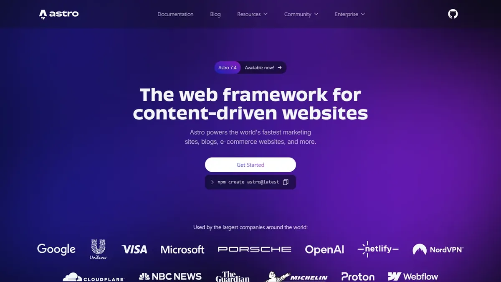
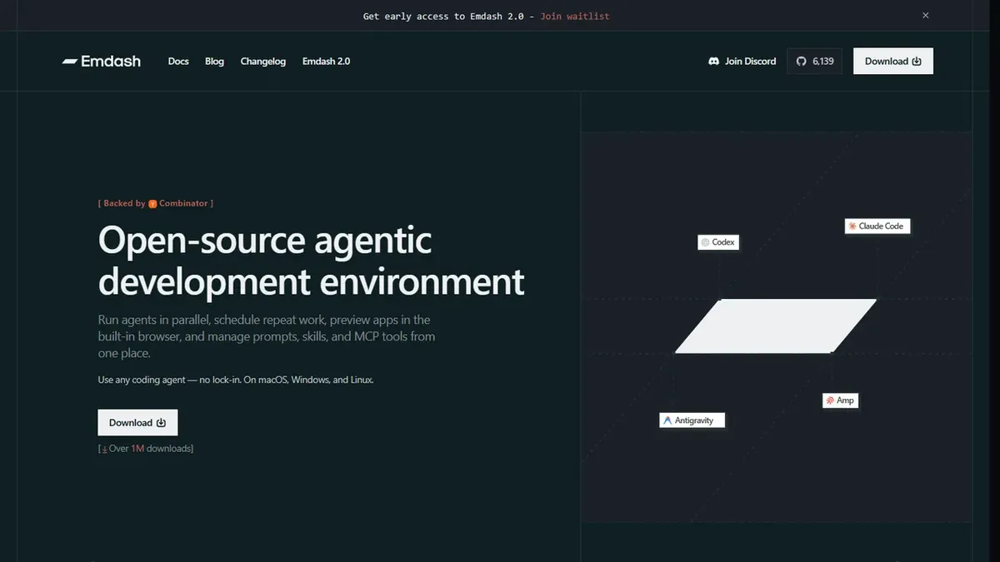

Featured & Top Picks
Highest-rated, open-source, and standout Site Builder tools curated by the community.

★ Top ChoiceAstro
Web framework designed for content-driven websites that ships zero JavaScript by default.

★ Open Source PickEmdash
Free, open-source agentic development environment to run coding agents in parallel, schedule workflows, and review changes.
Carrd
Simple, free, and responsive one-page website builder for portfolios, landing pages, and personal profiles.
All Site Builder Tools (26)
Explore, search, and filter zero-backend services and developer APIs.
Visual website builder for Mac, iPad, and iPhone that exports clean responsive static HTML
Visual desktop web design editor for creating responsive Bootstrap sites and exporting clean HTML
Simple, free, and responsive one-page website builder for portfolios and landing pages
AI-powered no-code website builder for responsive landing pages and static marketing sites
Open-source agentic development environment for running coding agents in parallel, scheduling workflows, and reviewing changes
Open-source, TypeScript-native CMS and site builder built on Astro for static and edge websites
Free, open-source web builder framework for visually designing HTML templates and websites
Free, browser-based visual website builder created by Core Framework developers
Free offline website builder software for Windows, Mac, and Linux with static HTML export
Visual website builder software for desktop and web that exports clean static HTML5 and CSS
Visual website builder with static export and low maintenance for WordPress creators
Desktop visual HTML and CSS editor for building responsive Bootstrap, Tailwind, and plain HTML sites
Open-source, Svelte-powered visual site builder and static CMS for deploying static websites
Free, open-source desktop static site CMS and visual builder for fast HTML websites offline
Native macOS website builder for designing and publishing fast static HTML websites
Free, open-source, browser-based static website builder with clean HTML/CSS output and Git integration
Visual website builder for Mac and iPad that generates clean static HTML, CSS, and JavaScript offline
Browser-based no-code and AI website builder with freeform design controls and static HTML export
Visual builder for Astro writing real components into your repo with full code access
Webflow-familiar visual site builder engineered for local developers and static sites
Collaborative low-code visual website builder exporting clean static HTML, CSS, and framework code
Block-based visual website builder for editorial landing pages and static HTML export
Open-source visual website builder and lightweight CMS with drag-and-drop page editing
Visual web design platform with granular CSS layout control and static HTML/CSS/JS export
Site Builder Developer FAQ
Common architecture questions, security guidelines, and implementation tips for static websites.
What is a static HTML site builder?
A static HTML site builder is a visual editor, desktop studio, or static-first framework that lets you design and assemble websites and export clean, production-ready HTML, CSS, and JavaScript with zero server or database dependencies.
How is a site builder different from traditional hosted builders like Wix or Squarespace?
Static site builders give you full ownership of your generated HTML, CSS, and assets with zero vendor lock-in. You can host the output for free on Cloudflare Pages, GitHub Pages, Netlify, Vercel, or Wasmer.
Can I edit the exported code in a standard code editor?
Yes! Tools like **Astro**, **sitereal**, **Bootstrap Studio**, and **Stacki** output clean, semantic markup and stylesheets that you can open, version-control in Git, and customize in VS Code, Cursor, or Emdash.
Do websites built with these site builders score well on Core Web Vitals?
Yes. Because they produce lightweight static HTML and CSS without heavy runtime CMS bloat or database queries, pages load near-instantly from any edge CDN.
Explore Related Categories
Complementary tools and services to expand your static web architecture.
Connect with fellow developers in the StaticStack Community. Share code snippets, ask implementation questions, and showcase your static projects.